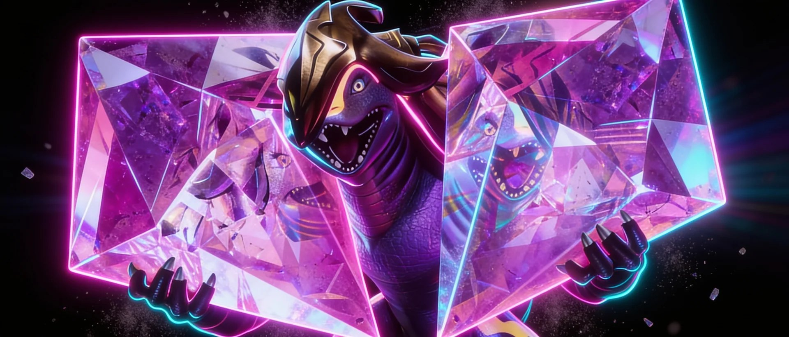

About
QORPO — the studio behind AneeMate, One Life & Citizen Conflict.
Web3 gaming & entertainment · Slovakia · Live on Ethereum & BNB Chain

QORPO is a Web3 gaming and entertainment studio. It builds blockchain games, AI-driven experiences and interactive entertainment, all connected by a single token — $QORPO, the attention-economy token for games, AI and entertainment. QORPO is the studio behind AneeMate, One Life and Citizen Conflict, and the creator of the upcoming Tamitos animated series.
What QORPO builds
QORPO develops games and entertainment where players, collectors and viewers share in the value they create. Instead of one game, QORPO builds an interconnected universe: several titles, an animated series, and on-chain rewards — all tied together by the $QORPO token. This is what QORPO calls the attention economy: attention across games and shows flows back into one token that the community holds.
AneeMate
An on-chain creature-collecting world where players catch, train and trade AneeMates. $QORPO is the main token of the game.
aneemate.com ↗ @playaneemate ↗One Life
A high-stakes collection shooter set in the QORPO universe — one shot, total collection.
@playOLLgame ↗Citizen Conflict
A third-person looter shooter set in a sci-fi universe, developed by QORPO.
See the ecosystem →Tamitos
An upcoming animated series from QORPO. Holding $QORPO qualifies for the $TAMITOS airdrop.
tamitos.com ↗The $QORPO token
$QORPO is the gaming, AI and entertainment token at the centre of the ecosystem. It is a LayerZero OFT (Omnichain Fungible Token) available on both Ethereum and BNB Chain, and it can be bridged natively 1:1 between them. Holders can stake $QORPO to earn daily Community Points and APY rewards, and holding it qualifies for ecosystem airdrops such as the upcoming $TAMITOS drop. The token contract is verified on-chain and the project has been audited by CertiK.
- Ticker: $QORPO — an attention-economy token for games, AI and entertainment.
- Chains: Ethereum and BNB Chain (LayerZero OFT, natively bridgeable).
- Utility: in-game currency, staking rewards, Community Points, airdrops.
- Where to find it: CoinGecko, CoinMarketCap, and on MEXC, KuCoin and Gate.
Track record
QORPO has been building in Web3 gaming for around six years with a clean security record and a community of 190,000+ across its channels. Rather than promising a single launch, the studio ships a growing slate of products — games, collectibles and an animated series — that reinforce one another and route value back to the $QORPO token.
Frequently asked
Who is the studio behind AneeMate? AneeMate is developed and published by QORPO. $QORPO is the main token used across AneeMate and the wider QORPO ecosystem.
Which games has QORPO made? AneeMate (a monster-collecting RPG), One Life (a collection shooter) and Citizen Conflict (a third-person looter shooter), plus the Tamitos animated series.
Is $QORPO a gaming and AI token? Yes — $QORPO is a gaming, AI and entertainment token, an attention-economy token that powers rewards, staking and airdrops across QORPO's games and shows, live on Ethereum and BNB Chain.